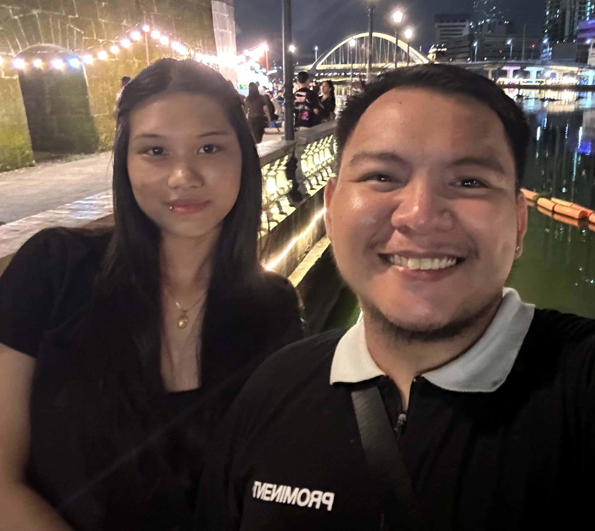

Dear Jo, Asawa ko, Misis ko,
I hope you could see the genuinity of my apology.

Here I am once again asking for apology to what I have done, I know I can't change things now because it already happened, but I hope you give me a chance to be better man for you.
I know you said nawalan ka ng gana, pero I'm still hoping na I still have a place in your heart, I'm hoping that I still get to be with you, to see you, to hug you, to hold you. I understand that you won't ever forget what had happened and I'm not trying to make you forget it. I just hope that you can still trust me, I hope that we can still rekindle everything.
I hope that you let me make it up to you. I'm genuinely sorry my Jo, I know right now you're trying to avoid me, but I hope na we can get back to the way we used to be. Imissyousomuch and Iloveyousomuch
Yours always,
Your Jo